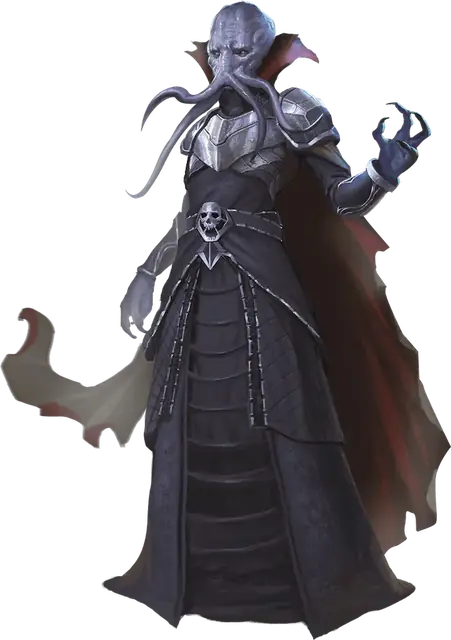

Свежеватель разума
Mind Flayer
Средняя Аберрация, Принципиальная Злая

Класс Защиты 15 Инициатива +4 (14)
Хиты 99 (18к8 + 18)
Скорость 30 футов, Полёта 15 футов (парит)
| мод | спас | ||
|---|---|---|---|
| СИЛ | 11 | +0 | +0 |
| ЛОВ | 12 | +1 | +4 |
| ТЕЛ | 12 | +1 | +1 |
| мод | спас | ||
|---|---|---|---|
| ИНТ | 19 | +4 | +7 |
| МДР | 17 | +3 | +6 |
| ХАР | 17 | +3 | +6 |
Сопротивление урону Психический
Чувства Тёмное зрение 120 футов, пассивное Восприятие 16
Языки Глубинная речь, Подземный, Телепатия 120 фт.
Опасность 7 (2 900 опыта; БВ +3)
Особенности
Сопротивление магии. Свежеватель разума совершает с Преимуществом спасброски от заклинаний и прочих магических эффектов.
Действия
Щупальца. Бросок рукопашной атаки: +7, досягаемость 5 фт. Попадание: 22 (4к8 + 4) Психического урона. Если цель Среднего размера или меньше, она получает состояние состояние Схваченный (Сл освобождения от захвата 14) от всех щупалец свежевателя разума, а также состояние Ошеломлённый до окончания захвата.
Извлечение мозга. Спасбросок Телосложения: Сл 15, одно Схваченное Щупальцами свежевателя разума существо. Провал: 55 (10к10) Колющего урона. Успех: Только половина урона. Провал или успех: Если этот урон опускает Хиты цели до 0, свежеватель разума убивает её, пожирая мозг.
Взрыв сознания (Перезарядка 5–6). Спасбросок Интеллекта: Сл 15, каждое существо в 60-футовом Конусе. Провал: 31 (6к8 + 4) Психического урона, и цель получает состояние Ошеломлённый до конца следующего хода свежевателя разума. Успех: Только половина урона.
Сотворение заклинаний. Свежеватель разума сотворяет одно из следующих заклинаний (заклинательная характеристика — Интеллект, Сл спасброска заклинаний 15):
Неограниченно: Обнаружение мыслей
1/день каждое: Планарный переход, Подчинение монстра
Бонус мастерства +3
Среда обитания Подземье
Сокровища Магические
Свежеватели разума
Деспотичные пожиратели мозгов из Подземья
Когда-то империя свежевателей разума простиралась меж планами и опустошала миры, но ныне от неё остались лишь разрозненные осколки. Уцелевшие свежеватели таятся в тайнах конклавах, сокрытых в недрах миров Материального плана. В своих чуждых пониманию святилищах эти злобные кукловоды — также известные как иллитиды — перекраивают Подземье и его обитателей, подчиняя их своим непостижимым прихотям.
Пожирателей разума страшатся за их псионическое могущество, способное парализовать волю и обращать других существ в послушных марионеток, а также за их кошмарный способ насыщения: четырьмя склизкими щупальцами они вскрывают черепа жертв и извлекают их мозг.
Свежеватели разума славятся как хитроумные заговорщики и манипуляторы, чьи планы простираются далеко за пределы их подземных владений. Помимо того, что иллитиды подчиняют других существ силой псионики, они нередко вмешиваются в собственный извращённый жизненный цикл, внедряя личинок в тела иных созданий, дабы порождать противоестественных слуг. Такие существа, как гримлоки и пожиратели интеллекта, стали плодом их чудовищных биологических опытов. Иные же обитатели Подземья — среди них куо-тоа, квагготы и троглодиты — нередко служат хозяевам-иллитидам. Гитьянки и гитцераи издавна ведут непримиримую войну с пожирателями разума и до сих пор несут на себе шрамы их порабощения.
Голод пожирателя разума по мозгам уступает лишь его жажде власти, и потому он согласится на любой замысел, что позволит насытить оба этих стремления.
Колонии свежевателей разума
Пожиратели разума плетут интриги поодиночке, в таинственных кабалах или внутри всемирных заговоров. Когда они объединяются, их странные и жуткие замыслы направляет старший мозг — гигантское мозгоподобное существо, обладающее невообразимой псионической мощью. Без подобного владыки сообщества иллитидов быстро скатываются к междоусобицам.
Совершите бросок по таблице «Замыслы пожирателей разума» для вдохновения или выберите сами план иллитидской колонии.
Замыслы пожирателей разума
| 1к6 | Колония пожирателей разума стремится… |
| 1 | Затмить солнце, чтобы их слуги могли вторгнуться из Подземья на поверхность. |
| 2 | Создать новый монструозный гибрид пожирателя разума и легендарного чудовища. |
| 3 | Создать псионическую сеть и объединить все иллитидские колонии. |
| 4 | Подменить мировых правителей пожирателями интеллекта. |
| 5 | Восстановить судно для путешествий по Дикому Пространству. |
| 6 | Пустить пси-энергию жителей целой планеты на захват оплота гитьянки. |